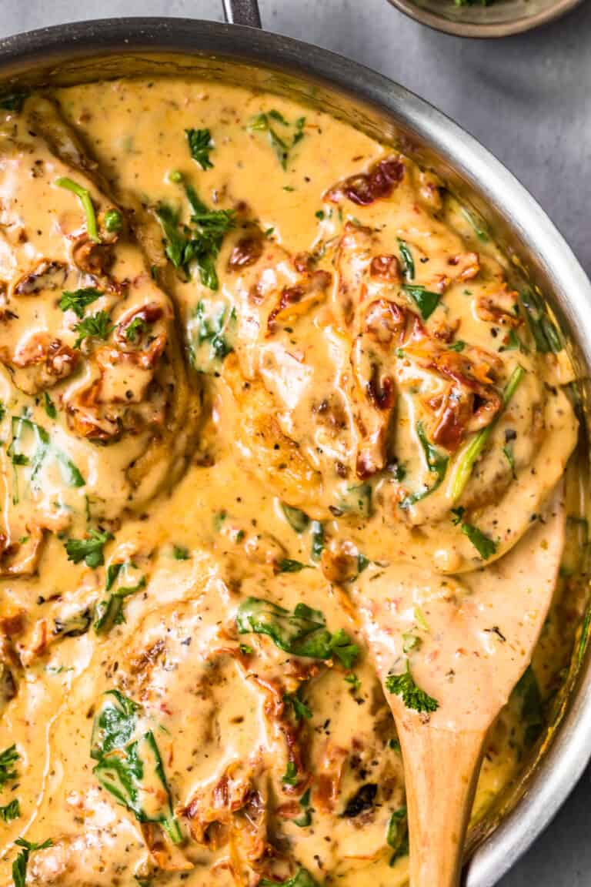

Tuscan Chicken in Parmesan Cream Sauce

This Tuscan chicken recipe features crispy, seasoned chicken breasts in a creamy Parmesan sauce with sun-dried tomatoes and spinach. It’s a classic Italian dish you’ll love eating for dinner, and it’s so simple to make. The creamy sauce is just irresistible!
Ingredients
For the Chicken
- 4 large chicken breasts: lightly pounded to even thickness
- 1 teaspoon Italian Seasoning
- Salt and pepper to taste
- 4 tablespoons flour
- 3 tablespoons parmesan cheese: hand shredded or grated
- 2 tablespoons European Style Butter
For the Sauce
- 1/4 cup European Style Butter
- 4 garlic cloves: minced
- 8.5 ounces sun-dried tomatoes: drained and rinsed
- 1 tablespoon flour
- 1/2 cup heavy cream
- 1 cup low sodium chicken broth
- 1/2 cup parmesan cheese: grated or hand shredded
- 1 teaspoon Italian seasoning
- 1/4 teaspoon black pepper
- 1 cup baby spinach: chopped
- Fresh parsley for garnish
Instructions
- Season each side of each pounded chicken breast with Italian Seasoning and salt and pepper.
-
Combine flour and grated parmesan in a shallow bowl. Dredge each chicken breast in the flour mixture, coating both sides.
-
Heat a large skillet over medium high heat. Add the 2 tablespoons butter and stir/melt.
-
Cook the chicken (in batches if necessary) for 4-5 minutes per side or until its fully cooked (165F in the center and no longer pink) and browned on both sides. Remove from the skillet and place on a plate. Cover with foil.
-
Wipe the skillet clean and return the skillet to medium high heat and add the remaining ¼ cup butter. Use a wooden spoon to scrape the bottom of the pan as the butter melts. The brown bits hold a lot of flavor, so no need to remove.
-
Add the garlic and sun-dried tomatoes and cook for 1-2 minutes or until fragrant.
-
Whisk in the flour and allow to thicken for approximately 1 minute.
-
Whisk in the heavy cream, chicken broth, parmesan cheese, Italian seasoning, and pepper. Stir to combine.
-
Add the spinach and reduce heat to simmer. Allow to cook until the sauce slightly thickens and the spinach wilts.
-
Add the chicken back into the skillet and turn to coat in the sauce. Allow to continue to simmer until the chicken is heated through, 2-3 minutes. Garnish with fresh parsley.
- Enjoy!
Tips
- Cook your chicken in batches if needs be, so you don’t overcrowd your pan.
- You can also use chicken thighs. Make sure to check doneness.
- You can check the doneness of your chicken by inserting a meat thermometer into the thickest part of the chicken – it should read at least 165F.
- After cooking the chicken and just before making the sauce, use a wooden spoon to scrape the bottom of the pan as the butter melts. The brown bits hold a lot of flavor, so no need to remove.
- Heavy cream will make the thickest richest sauce.
- Garnish with fresh parsley.
Main Page Source